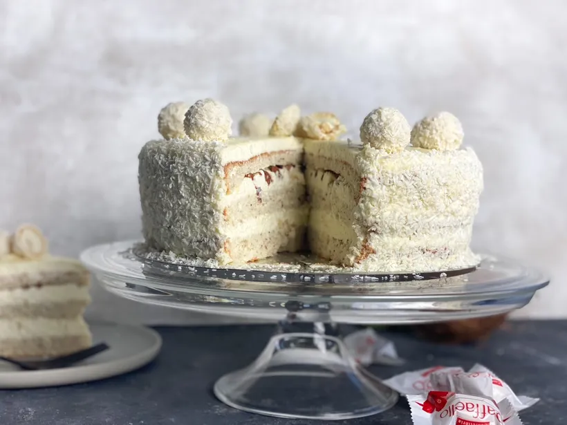

Raffaello cake with white chocolate mousse, coconut, almonds. Taste exactly like Raffaello balls.
Incredibly good it just melts in your mouth.
- 6 large Eggs
- 100g of Almonds or 2dl of Almond Flour
- 150g of Melted butter
- 1 pinch of Salt
- 2dl of Sugar
- 2dl of Flour
- 200g of White chocolate
- 1dl of Condensed Milk
- 300g of Cream cheese (Philadelphia cheese natural)
- 1dl of Coconut flakes
- 5dl of Whipping cream
- 2tbs of Vanilla sugar
- 1dl Almonds (coarsley chopped)
- 1.5dl of Coconutmilk to brush the cake base
- 1dl of Whipping cream
- 150g of White chocolate
- 100g of Coconut flakes
- 12 Rafaello balls
- Bottom: Set the oven at 170 degrees celcius and line a springform pan about 24 in diameter with
parchment paper.
- Roast almonds in a dry pan and let cool for a while. Grind the almonds with a food processor or in a
blender.
- Separate egg yolks and egg whites. Whisk the egg whites to a stiff foam. Add the sugar, a little at a
time. Whisk until you get a shiny meringue.
- Whisk egg yolks a little lightly in a bowl and mix into the meringue.
- Carefully turn down the ground almonds and wheat flour and stir gently to a smooth batter./li>
- Pour the batter into the mold and bake in the middle of the oven for about 20-25 minutes. (Do not open
the oven while the cake is baking) Check with a test strip if the cake is completely dry. Allow to cool
completely before dividing it into three parts.
- Filling: Roughly chop the chocolate and melt in a water bath (in a bowl over a saucepan with a
little boiling water) together with the condensed milk. Then let cool.
- Whisk cream cheese with vanilla sugar.
- Add the melted chocolate while whisking, whisk to a smooth and fine cream, finally mix in the coconut
flakes and stir everything.
- Whip cream in another bowl to a fairly firm consistency. Then mix the whipped cream with the cream
cheese batter, a little at a time
- Assemble the cake: Divide the cake base into 3 parts. Cut 4 small baking sheets and place on the
cake tray in which the cake is to be mounted (to avoid smudges). Lay the first base and brush with a
little coconut milk. Spread on one layer with filling, put on the next do the same. Place the last base
and spread on the filling on top and around the entire cake. Put cake in the fridge for at least 2
hours.
- Chocolate ganache: Chop the chocolate into smaller pieces. Boil cream in a saucepan and pour over
the chocolate, stirring until all the chocolate is melted.
- Pour over the chocolate ganache on the cake and smooth with a tablespoon or palette.
- Cover with coconut flakes, around the entire cake. Decorate with raffaello balls.
The cake tastes best when it has been in the fridge for 1-2 days.
Back to Recipes